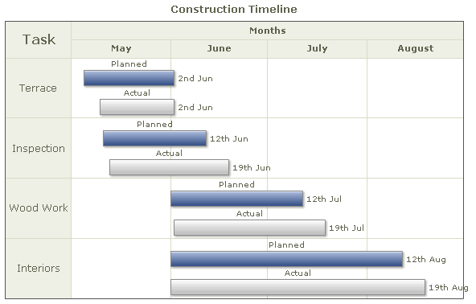
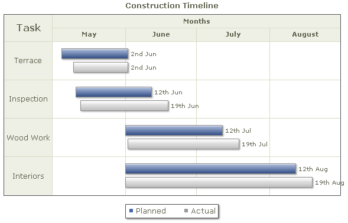
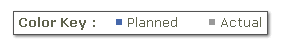

Gantt Chart > Adding legend |
FusionWidgets Gantt chart allows you to add legend with custom keys & colors to your chart. This is useful when you've used some color encoding in your chart and need to explain the color keys. Here, we'll see an example. |
| Adding legend to our "Projected vs. Actual" Gantt |
| Recall the chart that we had built in the section Multi-tasked Processes > Showing projected vs actual dates. The chart looked as under: |
|  |
As you can see above, we've used color coding to distinguish between actual dates and projected dates. In the chart above, we've repeatedly used the labels "Planned" and "Actual" to show what color indicates what. However, there's a better way to do this using the legend. We can have a chart as under with the legend: |
|  |
The XML for the chart can be listed as under: |
| <chart palette='2' caption='Construction Timeline' dateFormat='dd/mm/yyyy' outputDateFormat='ddds mns' > <categories> <category start='1/5/2008' end='31/8/2008' label='Months' /> </categories> <categories> <category start='1/5/2008' end='31/5/2008' label='May' /> <category start='1/6/2008' end='30/6/2008' label='June' /> <category start='1/7/2008' end='31/7/2008' label='July' /> <category start='1/8/2008' end='31/8/2008' label='August' /> </categories> <processes headerText='Task' headerFontSize='16' fontSize='12'> <process label='Terrace' id='TRC' /> <process label='Inspection' id='INS' /> <process label='Wood Work' id='WDW' /> <process label='Interiors' id='INT' /> </processes> <tasks showEndDate='1'> <task processId='TRC' start='5/5/2008' end='2/6/2008' id='5-1' color='4567aa' height='25%' topPadding='20%' /> <task processId='TRC' start='10/5/2008' end='2/6/2008' id='5' color='EEEEEE' height='25%' topPadding='55%'/> <task processId='INS' start='11/5/2008' end='12/6/2008' id='6-1' color='4567aa' height='25%' topPadding='20%' /> <task processId='INS' start='13/5/2008' end='19/6/2008' id='6' color='EEEEEE' height='25%' topPadding='55%'/> <task processId='WDW' start='1/6/2008' end='12/7/2008' id='7-1' color='4567aa' height='25%' topPadding='20%' /> <task processId='WDW' start='2/6/2008' end='19/7/2008' id='7' color='EEEEEE' height='25%' topPadding='55%'/> <task processId='INT' start='1/6/2008' end='12/8/2008' id='8-1' color='4567aa' height='25%' topPadding='20%' /> <task processId='INT' start='1/6/2008' end='19/8/2008' Id='8' color='EEEEEE' height='25%' topPadding='55%' /> </tasks> <legend> <item label='Planned' color='4567aa' /> <item label='Actual' color='999999' /> </legend> <styles> <definition> <style type='font' name='legendFont' size='13' /> </definition> <application> <apply toObject='Legend' styles='legendFont' /> </application> </styles> </chart> |
Here, we've:
|
| Customizing legend properties |
There are a lot of legend properties which can be customized using <chart> element attributes. You can add a caption to legend by setting: <chart legendCaption='Color Key : ' ..> This results in: |
|  |
You can customize the cosmetics using: <chart ... legendBorderThickness='2' legendBorderAlpha='50' legendBgColor='e1f5ff' legendBgAlpha='20' legendShadow='0' ...> This results in: |